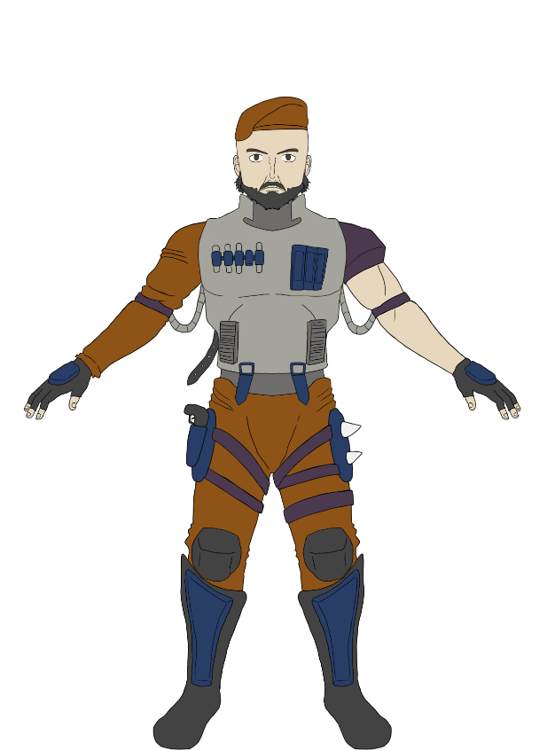

Faction A · Reconnaissance
RAVEN
Maîtresse de l'infiltration, Raven déploie des drones furtifs capables de révéler les positions ennemies en temps réel sans se dévoiler elle-même.
Furtivité90
Mobilité75
Puissance de feu65
Furtivité · Drones · Contrôle info